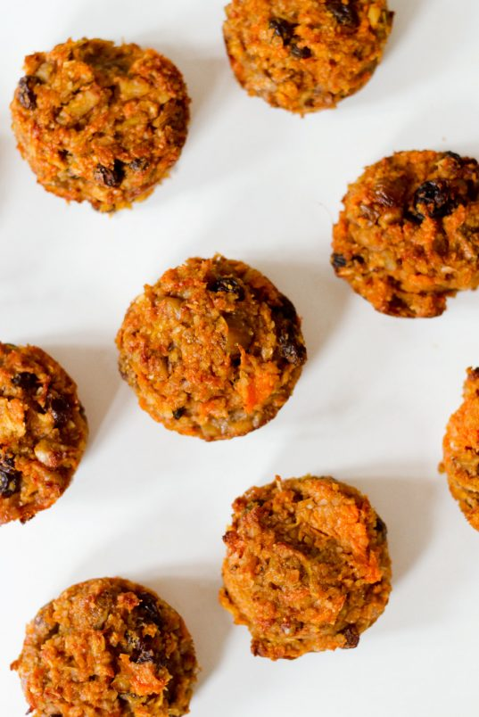

Sweet Potato Paleo Muffins

Sweet Potato Paleo Muffins are the perfect on-the-go breakfast but also hit the sweet spot for afternoon coffee, a combo that’s quickly become a daily essential. Most satisfying will be revealing to your friends just how healthy they are.
INGREDIENTS
- 3/4 cup mashed sweet potato
- 1/2 cup shredded carrot
- 1/2 cup grated apple
- 1/2 cup shredded coconut
- 1/2 cup raisins
- 1/4 cup chopped dried figs
- 1/2 cup chopped walnuts
- 3/4 cup almond flour
- 1/8 cup maple syrup (or honey)
- 1 tsp cinnamon
- 1/8 tsp nutmeg
- 1 tsp. baking powder
- 2 eggs
DIRECTIONS
Directions:
- Preheat oven to 350 F (175 C).
- Mix everything together in one large bowl.
- Grease muffin tin with coconut oil or use paper liners. Divide batter into 9 muffin tins.
- Bake for about 30-35 minutes, until muffin is cooked through and the top is golden. Remove from oven and let stand for 10 minutes.
- Remove muffins and let cool on a baking rack. Store in an airtight container, I would probably keep these in the fridge since there is no fat to preserve them.